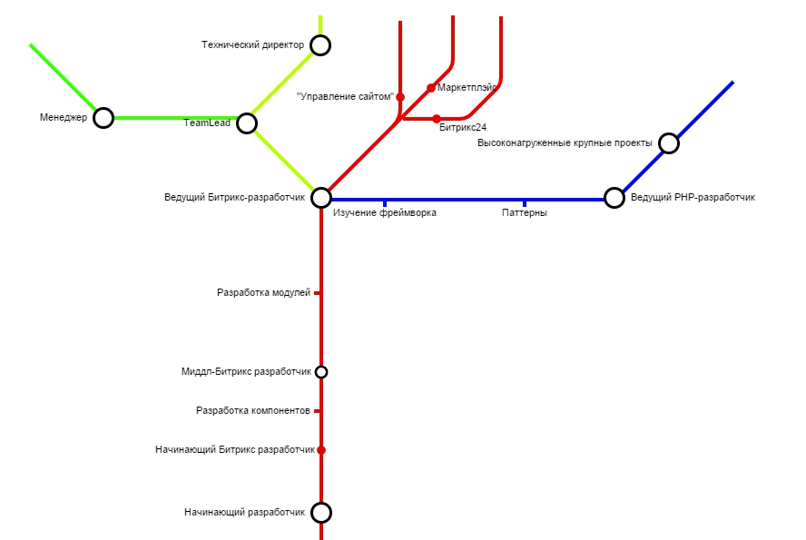

Сегодня мы поговорим о перспективах становления Битрикс-разработчика и об этапах этого пути. Статья не претендует на абсолютную истину, но даёт жизненные ориентиры. Все данные основаны на исследовании рынка (спасибо, hh.ru)

На что может рассчитывать соискатель, скажем, в Москве?
Надо отметить, что кризис стал поводом понизить зарплаты и это отразилось в последнее время и на вакансиях. Сейчас можно увидеть примерно следующую картину:
1. Начинающий Битрикс-разработчик - 30-60 тысяч рублей
2. Мидл Битрикс-разработчик - 60-80 тысяч
3. Ведущий Битрикс-разработчик - 80-100к
4. TeamLead ("жёлтая" ветка) - 100-120к
5. Архитектор / "Гуру" ("красная" ветка) - от 110к
Какой смысл расти?
Рост - это больше денег, более интересные проекты, больше уважения в обществе и больше возможностей реализовать что-то по-настоящему серьёзное.
Конечно, вместе с этим приходит и ответственность.
Что же нужно сделать, чтобы поднять свой "уровень" в глазах работодателей? Какие можно выделить вехи на пути?
Ниже представлен один из вариантов подобного archivement list'а. В идеале в Вашей компании должен быть составлен и вывешен на видное место аналогичный список, под ваши реалии.
Итак, начнём...
1) полгода работы с Битриксом
2) пройти курс по самому php и по смежным дисциплинам на любом обучающем онлайн-ресурсе и/или пройти хорошую книгу от корки до корки
3) пройти курсы "контент-менеджера" Битрикса и/или заполнить два проекта контентом от и до.
Level up!
2) разобраться с кэшированием в Битрикс, без запинки отвечать на вопросы о методах его работы и уметь всё на практике
Level up!
1) нужно выбивать себе ответственность за проекты "от и до", в т.ч. проектирование.
2) нужно попасть в ситуацию, когда над тобой будет висеть реальное наказание за неправильные решения - без этого нет роста
3) писать в паре с ведущим, более опытным разработчиком
4) нужно заниматься разработкой модулей
5) нужно собрать типовое решение
6) строго необходимо освоить систему контроля версий: git | svn, linux-консоль, mysql и т.п.
7) нужно расширять кругозор с помощью профильных ресурсов в интернете
Level up!
Обратим своё внимание на верх красной ветки, что там? Есть ли жизнь на Марсе?
Зарабатывать на Маркетплейс
Один из вариантов заработка для хорошего программиста - это делать серийные продукты и продавать их. Такой путь таит в себе определённые трудности, связанные с незрелостью рынка Битрикс, но он ведёт к появлению у вас
пассивного дохода. Конечно, предстоит решить много вопросов с поддержкой, ценой, продвижением, но в конечном итоге именно создание продукта - это путь к пассивному доходу.
Откуда брать идеи? Можно без заморочек искать решения на других платформах и адаптировать их под рынок Битрикса, например:
Битрикс 24
Битрикс 24 активно продвигается, в том числе и на заграничный рынок.
И, между тем, эта система состоит из исключений и особенностей практически полностью.
Корректные решения для платформы будут на вес золота. Та же ситуация - со специалистами.
На "корпоративном портале" Битрикс сидят несколько банков, в частности -
МБанк
Открыть проект
Опытный разработчик может легко сделать техническую часть стартапа и войти, тем самым, в состав учредителей проекта.
Участие в нескольких проектах - это надёжное обеспечение себя прибылью и интересной работой.